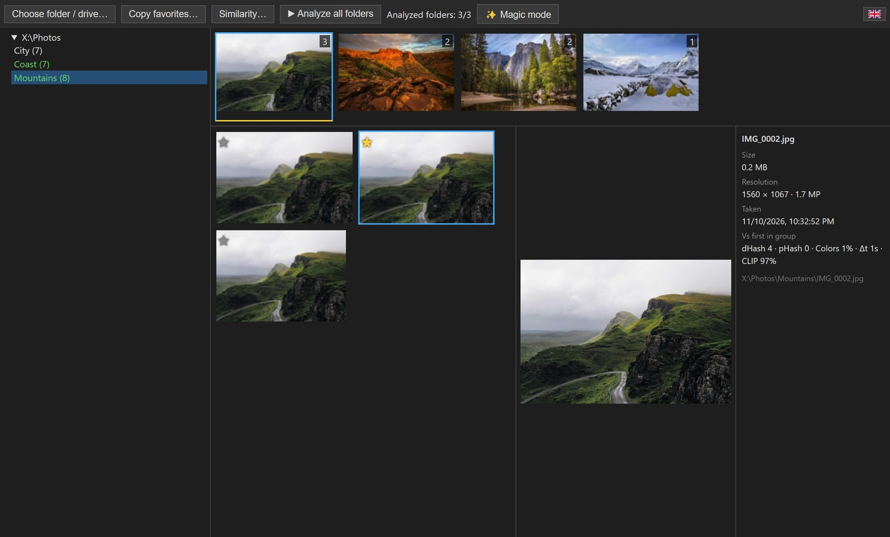

BestPhoto finds series of similar photos on your drive, shows them side by side so you can star the best ones, and copies your picks to a new place with the same folder structure.
⬇ Download for Windows
Scans a folder or an entire disk and shows every folder with photos as a tree.
Bursts, retakes and near-duplicates land in one group. Biggest groups come first.
dHash, pHash, color histogram, capture time and a local neural network (CLIP). Combine them with AND / OR.
Pick one or several favorites per group. Folders with favorites are marked as done.
One click favorites every unique photo plus one from each group of similar shots, across all folders.
Copies favorites with the original folder structure. Never overwrites, moves or deletes anything.
Analysis runs in the background with a time estimate. Progress, scores and favorites survive restarts.
Your photos never leave your computer. No account, no cloud, no tracking.
English, Español, Français, Русский, العربية, 中文.
| Windows 10 / 11 · portable, no install | BestPhoto.exe |
| macOS · Apple Silicon | BestPhoto-mac.dmg |
| Linux · any distro | BestPhoto-linux.AppImage |
| Fedora / RHEL / openSUSE | BestPhoto-linux.rpm |
| Debian / Ubuntu | BestPhoto-linux.deb |
macOS build is unsigned: after copying to Applications run xattr -cr /Applications/BestPhoto.app. AppImage: chmod +x it first. The neural network (~90 MB) is downloaded only if you enable it.